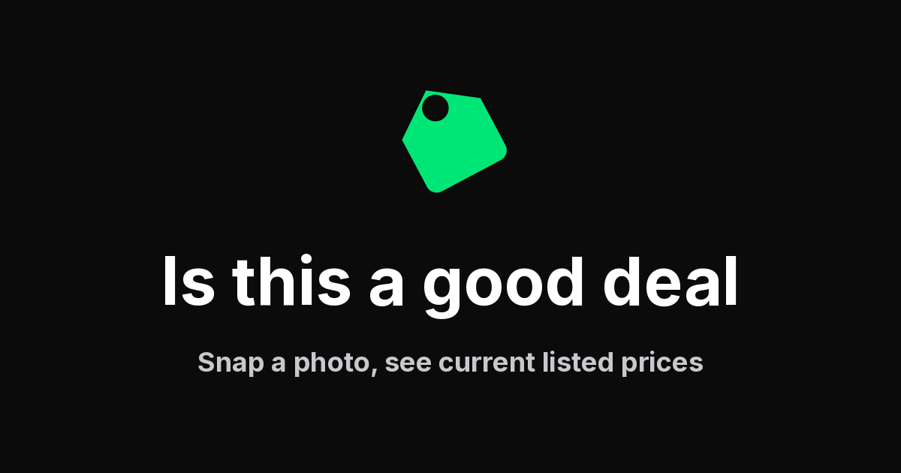

Is this a good deal? The honest way to answer that is to compare the asking price with what the same item, in the same condition, actually sells for. Not with other asking prices. If the price is at or under the estimated sale, it is a good deal. If it is above the top of the listed range, walk away or haggle. Everything in between is a fair price, and whether you take it depends on how much you want the thing.
That sounds simple, and it is. The hard part is getting the two numbers. Most people grab a few other listings, see that this one is a bit cheaper, and decide it is a bargain. That is the trap. The page I built for this question, is this a good deal, starts from a photo of the item instead.  How Much Is It Worth: Scanner does the same thing on iPhone, and there is one free scan on the website with no download.
How Much Is It Worth: Scanner does the same thing on iPhone, and there is one free scan on the website with no download.
Sellers start high. Some listings sit for months because nobody will pay what they are asking. So when you line up five listings and find one that is cheaper than the other four, all you have learned is that one seller is less optimistic than the rest. You have not learned what the item sells for.
The number to beat is the estimated sale: what the same item in the same condition would more likely sell for. It usually sits below the typical asking price. When you judge a deal against that number instead of against the shop window, a lot of "steals" turn out to be about fair, and a few turn out to be overpriced.
The website version of this page has a small deal checker. You type in the seller's price, the estimated sale from your scan, and the top of the listed range, and it gives you a plain verdict. That verdict is a rule of thumb based on your inputs, not a guarantee.
Want to try it? Start your free 3-day trial in the iPhone app at https://apps.apple.com/app/id6832980231. You get one free scan on the website at https://howmuchisitworth.today/is-this-a-good-deal. On Android? Check https://howmuchisitworth.today/ for the Android release.
Secondhand marketplaces, garage sales, op shops, and pawn shop shelves. Anywhere the price is set by a person, not a barcode. Pawn shop shelf prices are retail, and there is often room to haggle on items that have sat a while. Garage sale prices are low, but nothing comes with a return. Either way, a quick scan before you hand over cash tells you whether you are looking at a bargain or full price for something tired.
It is less useful for packaged products in a supermarket. A photo scanner does not read barcodes. And for one-off handmade pieces or items with very few listings anywhere, you will get an identification and a labelled rough estimate rather than a tight range. Treat that as a starting point.
A scan cannot check that the item works, that it is genuine, or that the seller is honest. It also is not a certified appraisal or an offer to buy. Use it to decide whether the price makes sense, then check the item in person or through the platform's buyer protection.
In the app, scans save to a history, and you can group a few options into a collection to compare them side by side before you commit. If you buy to resell, the app can draft a listing for eBay, Facebook Marketplace, or Gumtree straight from the scan.
The app is free to download. Start your free 3-day trial to scan in the app, or use one free scan on the website.
If you want to check the listing you are looking at right now, start at https://howmuchisitworth.today/is-this-a-good-deal, or download the app and Start your free 3-day trial.